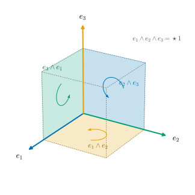

34.5 Exterior Algebra in Coordinates
Goals
- exterior algebra를 basis와 곱셈표로 구성해, Section 34.1의 규칙 (W1)–(W4)를 만족하는 대상이 있고 본질적으로 하나뿐임을 증명할 수 있다.
- \(k\)-vector, \(k\)-form, \(\wedge\), \(\star\), \(\sharp\), \(\flat\)을 성분(index tuple, minor, Gram matrix)으로 계산하고, 짧은 코드로 구현할 수 있다.
- \(\R^3\)에서 1-form과 2-form을 vector로, 3-form을 scalar로 옮기는 사전을 쓰고, 그것이 cross product와 inner product를 주는 것을 설명할 수 있다.
- orthonormal이 아닌 basis에서 단위 부피와 \(\star\)를 \(\sqrt{\det G}\)로 계산할 수 있다.
Prerequisites
Motivation
Section 34.4까지 모든 측정이 determinant로 계산된다는 것을 보았다. 이제 그것을 컴퓨터가 다룰 수 있는 배열로 옮길 차례다. \(k\)-vector와 \(k\)-form을 어떤 수의 목록으로 저장하고, \(\wedge\)와 \(\star\)는 그 목록에 무엇을 하는가? Crane의 강의도 exterior algebra를 그림으로 소개한 뒤 마지막에 coordinate representation으로 정리한다 [CMU-DDG L3] slides 35–45.
좌표에는 이론적인 쓸모도 하나 있다. Definition 34.1.1은 “규칙 (W1)–(W4)를 만족하는 \(\Lambda^kV\)와 \(\wedge\)가 주어져 있다”고 가정했다. 그런 것이 정말 있는지, 둘 이상이면 서로 다른 답을 주지는 않는지 아직 보이지 않았다. 이 절에서 basis와 곱셈표로 그것을 직접 만들어 두 질문에 답한다.
The Exterior Algebra and Its Multiplication Table
이 절에서 \((e_1, \dots, e_n)\)은 \(V\)의 basis이고, basis \(k\)-vector \(e_I = e_{i_1}\wedge\cdots\wedge e_{i_k}\)(\(I\)는 increasing multi-index)는 (34.1.4)와 같다. 각 degree를 한데 모은 것에 이름을 붙이자.
Definition 34.5.1 (exterior algebra). \(V\)가 \(n\)차원 vector space이고 \((\Lambda^kV)_{k \ge 0}\)와 \(\wedge\)가 규칙 (W1)–(W4)(Definition 34.1.1)를 만족한다고 하자. direct sum
\[ \Lambda V = \Lambda^0V \oplus \Lambda^1V \oplus \cdots \oplus \Lambda^nV \]
에 \(\wedge\)를 degree별로 bilinear하게 넓힌 곱을 준 것을 \(V\)의 exterior algebra(외대수)라 한다. 원소 \(\xi = \xi_0 + \xi_1 + \cdots + \xi_n\)(\(\xi_k \in \Lambda^kV\))을 multivector라 부르기도 한다.
Theorem 34.1.11에 의해 \(\dim\Lambda V = \sum_{k=0}^{n}\binom{n}{k} = 2^n\)이다. \(\R^3\)이면 \(1 + 3 + 3 + 1 = 8\)이다. \(k \gt n\)인 \(\Lambda^kV\)는 \(\{0\}\)이라 direct sum에서 뺐다. Non-example 34.1.2의 대상들(\(k \ge 2\)이면 모두 \(0\)인 것, 다항식의 곱, 군더더기를 붙인 것, 부호를 비튼 곱)은 각각 (W4), (W2), (W3), (W1)을 어겨 exterior algebra가 아니다. 곱의 결과의 degree는 두 degree의 합이므로 \(\Lambda V\)를 graded algebra라 한다 [CMU-DDG L3] slide 41.
Proposition 34.5.2 (multiplication table). increasing multi-index \(I = (i_1, \dots, i_k)\), \(J = (j_1, \dots, j_l)\)에 대하여, \(I\)와 \(J\)에 공통인 수가 있으면 \(e_I\wedge e_J = 0\)이다. 공통인 수가 없으면
이다. 여기서 \(I\cup J\)는 두 목록의 수를 합쳐 작은 것부터 늘어놓은 것이다. 특히 (34.2.4)의 부호는
이다.
이 명제가 말하는 것. basis \(k\)-vector끼리의 곱은 “첨자를 이어 붙이고, 겹치면 \(0\), 아니면 정렬하면서 맞바꾼 횟수만큼 부호를 바꾼다”. \(N(I, J)\)는 이어 붙인 수열 \((I, J)\)에서 순서가 뒤집힌 쌍(inversion)의 수다. Crane이 exterior algebra를 형식적으로 정의할 때 쓰는 규칙이 이것이다 [CMU-DDG L3] slide 41.
Proof. 공통인 수가 있으면 같은 \(e_i\)가 두 번 나오므로 Proposition 34.1.3(b)에 의해 \(0\)이다. 없으면 \(e_{i_1}\wedge\cdots\wedge e_{i_k}\wedge e_{j_1}\wedge\cdots\wedge e_{j_l}\)을 이웃한 맞바꾸기로 정렬한다. \(I\)가 증가하므로 \(j_1\)보다 큰 \(i_a\)들은 \(I\)의 끝에 모여 있다. \(e_{j_1}\)을 그것들 앞으로 옮기는 데 \(\#\{a : i_a \gt j_1\}\)번이 든다. 그다음 \(e_{j_2}\)(\(j_2 \gt j_1\))보다 큰 \(i_a\)들도 끝에 모여 있으므로 \(\#\{a : i_a \gt j_2\}\)번이 든다. 이렇게 모두 \(N(I, J)\)번 맞바꾸면 정렬되고, 한 번마다 부호가 바뀐다(Proposition 34.1.3(b)). (34.5.2): \(I^c\)의 수 가운데 \(i_a\)보다 작은 것은 \(1, \dots, i_a - 1\) 가운데 \(I\)에 없는 것, 곧 \((i_a - 1) - (a - 1) = i_a - a\)개이므로 \(N(I, I^c) = \sum_a (i_a - a)\)이다.
Theorem 34.5.3 (existence and uniqueness of the exterior algebra). \(V\)가 \(n\)차원 vector space이고 \((e_1, \dots, e_n)\)이 basis라 하자.
- (a) (existence) \(0 \le k \le n\)이면 \(\Lambda^k\)를 increasing multi-index \(I\)(길이 \(k\))마다 하나씩인 기호 \(e_I\)를 basis로 하는 vector space(즉 \(\R^{\binom{n}{k}}\))로, \(k \gt n\)이면 \(\{0\}\)으로 두자. \(\Lambda^0 = \R\)(\(e_{()} = 1\))이고, \(\Lambda^1\)은 \(e_{(i)} \leftrightarrow e_i\)로 \(V\)와 같은 것으로 본다. \(\wedge\)를 basis 위에서 (34.5.1)(공통인 수가 있으면 \(0\))로 정하고 bilinear하게 넓히면 (W1)–(W4)가 성립한다.
- (b) (uniqueness) \((\Lambda^kV, \wedge)\)와 \((\Lambda'^kV, \wedge')\)가 둘 다 (W1)–(W4)를 만족하면, 모든 \(v_j \in V\)에 대해 \(\Phi(v_1\wedge\cdots\wedge v_k) = v_1\wedge'\cdots\wedge' v_k\)인 linear isomorphism \(\Phi\colon \Lambda^kV \to \Lambda'^kV\)가 각 \(k\)마다 꼭 하나 있고, \(\Phi(\xi\wedge\eta) = \Phi(\xi)\wedge'\Phi(\eta)\)이다.
이 정리가 말하는 것. 규칙 (W1)–(W4)는 모순이 없고(그런 대상이 있다), 모든 것을 정한다(규칙만으로 계산한 결과는 어느 구성에서나 같다). 그래서 Section 34.1–34.4에서 규칙만 써서 증명한 것은 모두 이 구성에서 성립하고, 아래의 성분 계산과 코드는 그 결과를 그대로 계산한다.
Proof idea: (W2), (W3), (W4)는 곱셈표에서 바로 보인다. 결합법칙은 inversion의 수가 \[ N(I, J) + N(I\cup J, K) = N(I, J) + N(I, K) + N(J, K) \]처럼 쪼개진다는 셈으로 나온다. 유일성은 Proposition 34.5.2가 규칙만으로 곱셈표를 정한다는 데서 나온다.
Proof. (a) bilinearity는 정의다. scalar 규칙: \(e_{()}\wedge e_J = (-1)^0 e_J\)이다. (W2): \(v = \sum_i v^i e_i\)이면 \(v\wedge v = \sum_{i,j} v^iv^j\,e_{(i)}\wedge e_{(j)}\)이다. \(i = j\)인 항은 \(0\)이고, \(i \lt j\)이면 \(e_{(i)}\wedge e_{(j)} = e_{(i,j)}\), \(e_{(j)}\wedge e_{(i)} = -e_{(i,j)}\)이므로 두 항 \(v^iv^j e_{(i,j)} - v^jv^i e_{(i,j)}\)가 상쇄된다. (W3): \(i_1 \lt \cdots \lt i_k\)이면 이미 정렬되어 있으므로 \(N = 0\)이고, \(k\)에 대한 귀납으로 \(e_{(i_1)}\wedge\cdots\wedge e_{(i_k)} = e_I\)이다. basis가 모두 simple이므로 (W3)이 성립한다. (W4): \(e_1\wedge\cdots\wedge e_n = e_{(1,\dots,n)} \neq 0\)이다.
(W1): basis 세 개 \(e_I, e_J, e_K\)에 대해 보이면 trilinearity로 충분하다. \(I, J, K\) 가운데 두 개가 공통인 수를 가지면 양쪽 모두 \(0\)이다. 예를 들어 \(I\cap K \neq \emptyset\)이면 \((e_I\wedge e_J)\wedge e_K\)에서는 \(I\cup J\)와 \(K\)가, \(e_I\wedge(e_J\wedge e_K)\)에서는 \(I\)와 \(J\cup K\)가 공통인 수를 가진다. 서로 겹치지 않으면 양쪽 모두 \(\pm e_{I\cup J\cup K}\)이고 부호의 지수는 각각 \(N(I, J) + N(I\cup J, K)\), \(N(J, K) + N(I, J\cup K)\)이다. \(N(I\cup J, K)\)는 \(I\cup J\)의 수 \(x\)와 \(K\)의 수 \(y\)로 \(x \gt y\)인 쌍의 수이므로 \(N(I, K) + N(J, K)\)이고, 같은 이유로 \(N(I, J\cup K) = N(I, J) + N(I, K)\)이다. 두 지수가 모두 \(N(I, J) + N(I, K) + N(J, K)\)로 같다.
(b) Theorem 34.1.11에 의해 \((e_I)\)와 \((e'_I)\)(\(\wedge'\)로 만든 것)는 각각 basis다. \(\Phi(e_I) := e'_I\)로 linear isomorphism을 정하자. Proposition 34.5.2의 증명은 Proposition 34.1.3만 썼고 Proposition 34.1.3은 (W1), (W2)만 썼으므로, 두 곱셈표는 모두 (34.5.1)이다. 따라서 basis에서 \(\Phi(e_I\wedge e_J) = \Phi(e_I)\wedge'\Phi(e_J)\)이고 bilinearity로 일반적으로 성립한다. \(\Lambda^1\)에서 \(\Phi\)는 identity(\(e_i \mapsto e_i\))이므로 \[ \Phi(v_1\wedge\cdots\wedge v_k) = \Phi(v_1)\wedge'\cdots\wedge'\Phi(v_k) = v_1\wedge'\cdots\wedge' v_k \]이다. 이 성질을 가진 linear map은 simple \(k\)-vector에서의 값으로 정해지므로 하나뿐이다(W3).
이 구성은 basis를 골라야 하지만, (b)에 의해 어느 basis로 만들어도 같은 대상이 나온다. basis 없이 만드는 표준 구성은 tensor algebra를 \(v\otimes v\)가 만드는 ideal로 나눈 몫이다(Go deeper). Theorem 34.4.6은 또 다른 구성을 주었다. \(V^*\)의 exterior algebra를 \(V\) 위의 alternating multilinear 함수로 실현한 것이다.
Figure 34.5.1은 \(\R^3\)의 basis \(k\)-vector \(1\), \(e_1, e_2, e_3\), \(e_2\wedge e_3, e_3\wedge e_1, e_1\wedge e_2\), \(e_1\wedge e_2\wedge e_3\)을 단위 정육면체의 한 vertex에 모아 그린 것이다. 세 축 화살표가 1-vector, 원점에서 만나는 세 면이 2-vector, 점선 정육면체가 3-vector다. 각 면은 그것에 수직인 화살표와 같은 색이다. 예를 들어 파란 \(e_1\)과 파란 면 \(e_2\wedge e_3\)이 짝이다. 면의 곡선 화살표는 그 면의 orientation이고, 짝인 화살표를 엄지로 하는 오른손 법칙과 맞는다. 이 짝짓기가 아래 표의 Hodge star다.

Components
앞 절들에서 증명한 것을 성분으로 모으면 다음과 같다. \(k\)-vector의 성분은 위첨자 multi-index, \(k\)-form의 성분은 아래첨자 multi-index로 쓴다(vector 성분 \(v^i\), covector 성분 \(\alpha_i\)와 같은 규칙, Remark 1.4.9).
| object or operation | components | where proved |
|---|---|---|
| \(k\)-vector | \(\xi = \sum_I \xi^I e_I\); simple이면 \(\xi^I = \det U_I\) (minor) | (34.1.2), Theorem 34.1.11 |
| \(k\)-form | \(\omega = \sum_I \omega_I e^I\), \(\omega_I = \omega(e_{i_1}, \dots, e_{i_k})\) | Lemma 34.4.5 |
| pairing | \(\omega(\xi) = \sum_I \omega_I\,\xi^I\); \(\omega(u_1, \dots, u_k) = \sum_I \omega_I\det U_I\) | Proposition 34.4.7 |
| wedge | \(e_I\wedge e_J = \sgn(I, J)\,e_{I\cup J}\) or \(0\) | (34.5.1) |
| inner product (orthonormal \(e_i\)) | \(\inner{\xi}{\eta} = \sum_I \xi^I\eta^I\) | Proposition 34.2.1 |
| Hodge star (positively oriented orthonormal \(e_i\)) | \(\star\xi = \sum_I \sgn(I, I^c)\,\xi^I e_{I^c}\), \(\sgn(I, I^c) = (-1)^{\sum_a(i_a - a)}\) | (34.2.5), (34.5.2) |
| flat on vectors | \((u^\flat)_i = \sum_j g_{ij}u^j\) | (34.3.2) |
| flat on \(k\)-vectors | \((\xi^\flat)_I = \sum_J \det(G_{IJ})\,\xi^J\) | Proposition 34.5.6 |
예를 들어 \(\R^4\)에서 \(\star e_{13}\)을 (34.5.2)로 구하면 \(I = (1, 3)\), \(\sum_a(i_a - a) = 0 + 1 = 1\)이므로 \(\sgn = -1\), \(I^c = (2, 4)\)이고 \(\star e_{13} = -e_{24}\)이다. \(\star\)가 \(e_I\)와 \(e_{I^c}\)를 짝짓는 것은 \(\binom{n}{k} = \binom{n}{n-k}\)의 이유다. 길이 \(k\)인 increasing multi-index와 그 여집합(길이 \(n-k\))은 하나씩 대응한다.
Example 34.5.4 (the Hodge star table of three-space). \(\R^3\)에서 (34.5.2)로 모든 basis \(k\)-vector의 \(\star\)를 구하면 다음과 같다. \(\sgn\)이 \(-1\)인 것은 \(I = (2)\)(\(\sum(i_a - a) = 1\))과 \(I = (1, 3)\)(\(0 + 1 = 1\))뿐이다.
| \(k\) | basis \(k\)-vector \(e_I\) | \(\star e_I\) | count |
|---|---|---|---|
| 0 | \(1\) | \(e_{123}\) | 1 |
| 1 | \(e_1,\ e_2,\ e_3\) | \(e_{23},\ -e_{13},\ e_{12}\) | 3 |
| 2 | \(e_{12},\ e_{13},\ e_{23}\) | \(e_3,\ -e_2,\ e_1\) | 3 |
| 3 | \(e_{123}\) | \(1\) | 1 |
\(-e_{13} = e_3\wedge e_1\)이므로 \(\R^3\)에서는 increasing 대신 순환 순서 \((e_{23}, e_{31}, e_{12})\)를 2-vector의 basis로 쓰면 부호가 모두 \(+\)가 된다((34.2.7)와 같다). \(k\)-form \(e^I\)의 표도 같다(Proposition 34.4.11(a)).
Verification: verify/v-34-5-coordinates.py
Vectors and Forms in R^3
유클리드 \(\R^3\)에서는 \(\dim\Lambda^1 = \dim\Lambda^2 = 3\), \(\dim\Lambda^0 = \dim\Lambda^3 = 1\)이라 모든 form을 vector나 scalar로 쓸 수 있다. 이 사전이 vector calculus의 grad, curl, div를 form의 언어로 옮기는 바탕이다(Chapter 35).
Proposition 34.5.5 (vectors and forms in three-space). 유클리드 \(\R^3\), standard orientation, standard basis라 하자. \(a, b, c, w \in \R^3\)에 대하여 다음이 성립한다.
- (a) (1-forms) \(a^\flat = a^1e^1 + a^2e^2 + a^3e^3\)이고 \(a^\flat(u) = \inner{a}{u}\)이다.
- (b) (2-forms) \[ \star(w^\flat) = w^1\,e^2\wedge e^3 + w^2\,e^3\wedge e^1 + w^3\,e^1\wedge e^2 \]이고 \(\star(w^\flat)(u, v) = \inner{w}{u\times v}\)이다. 모든 2-form은 꼭 하나의 \(w\)에 대해 이 꼴이다.
- (c) (3-forms) 모든 3-form은 \(c\,e^1\wedge e^2\wedge e^3\)이고 그 값은 \(c\det(u, v, w)\)이다.
- (d) (products) \(a^\flat\wedge b^\flat = \star\big((a\times b)^\flat\big)\), \(a^\flat\wedge\star(b^\flat) = \inner{a}{b}\;e^1\wedge e^2\wedge e^3\), \(a^\flat\wedge b^\flat\wedge c^\flat = \det(a, b, c)\;e^1\wedge e^2\wedge e^3\)이다.
이 명제가 말하는 것. 2-form \(\omega = w^1 e^{23} + w^2 e^{31} + w^3 e^{12}\)는 vector \(w = (w^1, w^2, w^3)\)의 flux를 잰다. 1-form 둘의 wedge는 cross product이고, 1-form과 2-form의 wedge는 inner product, 1-form 셋의 wedge는 determinant다.
Proof. (a) (34.3.2)에서 \(G = I\)이다. (b) \(\star e^1 = e^2\wedge e^3\), \(\star e^2 = e^3\wedge e^1\), \(\star e^3 = e^1\wedge e^2\)(Example 34.5.4)와 linearity에서 첫 식이 나온다. 값은 (34.4.3)으로 \((e^2\wedge e^3)(u, v) = u^2v^3 - u^3v^2\), \((e^3\wedge e^1)(u, v) = u^3v^1 - u^1v^3\), \((e^1\wedge e^2)(u, v) = u^1v^2 - u^2v^1\)이고, 이것은 \(u\times v\)의 세 성분이다((1.6.9)). \(\star\)와 \(\flat\)이 isomorphism이므로(Proposition 34.4.11(d)) \(w \mapsto \star(w^\flat)\)는 \(\R^3\)에서 \(\Lambda^2\)로의 isomorphism이다. (c) \(\dim\Lambda^3 = 1\)이고, (34.4.3)에서 \(e^{123} = \det\)이다. (d) 첫째: Proposition 34.4.11(c)와 Proposition 34.2.8에서 \[ \star(a^\flat\wedge b^\flat) = \star\big((a\wedge b)^\flat\big) = (\star(a\wedge b))^\flat = (a\times b)^\flat \]이고, 양변에 \(\star\)를 쓰면(\(\star\star = 1\)) 첫째 식이다. 둘째: Proposition 34.4.11(b)에서 \(\inner{a^\flat}{b^\flat} = \inner{a}{b}\)(\(\flat\)은 isometry). 셋째: (34.4.3)과 \(\det[e^i\text{-성분}] = \det(a, b, c)\)이다. 즉 \[ \begin{aligned} (a^\flat\wedge b^\flat\wedge c^\flat)(e_1, e_2, e_3) &= \det[a^\flat(e_j), b^\flat(e_j), c^\flat(e_j)] \\ &= \det(a, b, c) \end{aligned} \](Theorem 1.6.8(c)).
Sharp, Flat, and the Hodge Star in a General Basis
orthonormal이 아닌 basis \((b_1, \dots, b_n)\)(Gram matrix \(G = (g_{ij})\), dual basis \((\beta^i)\))에서는 성분 계산에 \(G\)가 들어간다. vector에 대해서는 (34.3.2)이고, \(k\)-vector로는 다음과 같이 넓어진다. \(G_{IJ}\)는 \(G\)의 \(I\)행 \(J\)열로 만든 \(k\times k\) 행렬이다.
Proposition 34.5.6 (flat in a general basis). \((b_J)^\flat = \sum_I \det(G_{IJ})\,\beta^I\)이다. 따라서 \((\xi^\flat)_I = \sum_J \det(G_{IJ})\,\xi^J\)이고, 특히 \(k = n\)이면 \((b_1\wedge\cdots\wedge b_n)^\flat = \det G\;\beta^1\wedge\cdots\wedge\beta^n\)이다.
Proof. (34.3.2)에서 \(b_j^\flat = \sum_i g_{ij}\beta^i\)이므로 \(b_j^\flat\)의 \((\beta^i)\)-성분 행렬은 \(G\)의 \(j\)번째 열이다. Proposition 34.4.8(a)에서 \((b_J)^\flat = b_{j_1}^\flat\wedge\cdots\wedge b_{j_k}^\flat\)이고, 이것을 \(V^*\)에서 (34.1.2)로 전개하면(Theorem 34.4.6(c)) 성분은 \(G\)의 \(j_1, \dots, j_k\)번째 열로 만든 \(n\times k\) 행렬의 \(I\)행 minor, 곧 \(\det G_{IJ}\)이다.
Proposition 34.5.7 (unit volume in a general basis). \(V\)에 orientation이 있고 \((b_i)\)가 positively oriented basis이면
이다.
이 명제가 말하는 것. 양의 단위 부피를 재는 \(n\)-form은 좌표 basis의 \(n\)-form \(\beta^1\wedge\cdots\wedge\beta^n\)에 \(\sqrt{\det G}\)를 곱한 것이다. surface에서는 \(\sqrt{\det G} = \sqrt{EG - F^2}\)이 area element의 coefficient이고(Chapter 7), Riemannian manifold에서는 volume form \(dV_g = \sqrt{\det(g_{ij})}\,dx^1\wedge\cdots\wedge dx^n\)의 coefficient다(Section 21.6).
Proof. 첫째 식은 Proposition 34.2.4이다. 둘째: positively oriented orthonormal basis \((e_i)\)에 대해 Proposition 34.4.11(a), (c)에서 \(\star 1 = e^1\wedge\cdots\wedge e^n = (e_1\wedge\cdots\wedge e_n)^\flat = \mathrm{vol}^\flat\)이다(\(1^\flat = 1\)). 첫째 식과 Proposition 34.5.6(\(k = n\))에서 \[ \mathrm{vol}^\flat = (\det G)^{-1/2}\det G\;\beta^1\wedge\cdots\wedge\beta^n = \sqrt{\det G}\;\beta^1\wedge\cdots\wedge\beta^n \]이다.
Example 34.5.8 (the sphere, continued). Example 34.3.5의 sphere \(S^2(r)\)의 점 \(p = \mathbf{x}(\theta, \varphi)\)에서 tangent plane의 basis \((\mathbf{x}_\theta, \mathbf{x}_\varphi)\)는 \(G = \diag(r^2, r^2\sin^2\theta)\)이다. orientation은 \((\mathbf{x}_\theta, \mathbf{x}_\varphi)\)가 positively oriented인 쪽으로 준다(\(\mathbf{x}_\theta\times\mathbf{x}_\varphi\)가 바깥쪽 \(\mathbf{N}\)을 향하는 쪽이다). orthonormal basis \(f_1 = \mathbf{x}_\theta/r\), \(f_2 = \mathbf{x}_\varphi/(r\sin\theta)\)는 positively oriented이고, Example 34.2.7의 표 \(\star f_1 = f_2\), \(\star f_2 = -f_1\)에서
\[ \star\mathbf{x}_\theta = \frac{1}{\sin\theta}\,\mathbf{x}_\varphi, \qquad \star\mathbf{x}_\varphi = -\sin\theta\;\mathbf{x}_\theta \]
이다. dual basis \((\beta^1, \beta^2)\)에서는 \(f^1 = r\beta^1\), \(f^2 = r\sin\theta\,\beta^2\)가 positively oriented orthonormal이므로
\[ \begin{aligned} &\star\beta^1 = \sin\theta\;\beta^2, \qquad \star\beta^2 = -\frac{1}{\sin\theta}\,\beta^1, \\ &\star 1 = r^2\sin\theta\;\beta^1\wedge\beta^2 \end{aligned} \]
이다. 마지막 식은 (34.5.3)의 \(\sqrt{\det G} = r^2\sin\theta\)와 맞는다. 이것이 sphere의 넓이 요소 \(dA = r^2\sin\theta\,d\theta\,d\varphi\)의 coefficient다. 성분으로는 \(\star\)가 행렬 \(\begin{pmatrix} 0 & -\sin\theta \\ 1/\sin\theta & 0\end{pmatrix}\)이라 회전처럼 보이지 않지만, \(g\)의 눈으로는 \(90^\circ\) 회전이다(Example 34.2.10(b)와 같은 현상). Chapter 35에서 \(\beta^1, \beta^2\)는 \(d\theta, d\varphi\)가 된다.
Verification: verify/v-34-5-coordinates.py
Summary
- exterior algebra \(\Lambda V = \bigoplus_k\Lambda^kV\)는 (W1)–(W4)를 만족하는 graded algebra이고, \(\dim\Lambda V = 2^n\)이다(Definition 34.5.1).
- basis 곱셈표는 \(e_I\wedge e_J = (-1)^{N(I, J)}e_{I\cup J}\)(겹치면 \(0\))이고, \(\sgn(I, I^c) = (-1)^{\sum_a(i_a - a)}\)이다(Proposition 34.5.2). 이 표로 만든 대상은 규칙을 만족하고, 규칙을 만족하는 대상은 모두 이것과 같다(Theorem 34.5.3).
- 성분 계산: \(k\)-vector의 성분은 minor, \(k\)-form의 성분은 basis에서의 값, pairing은 \(\sum_I\omega_I\xi^I\), \(\star\)는 \(e_I \mapsto \pm e_{I^c}\)(Components의 표). 코드로는 increasing tuple을 key로 하는 사전이다.
- \(\R^3\)에서 2-form \(w^1e^{23} + w^2e^{31} + w^3e^{12}\)는 \(w\)의 flux를 재고, 1-form끼리의 wedge는 cross product, 1-form과 2-form의 wedge는 inner product다(Proposition 34.5.5).
- 일반 basis에서 \(\flat\)은 \(G\)의 minor로, 단위 부피는 \(\sqrt{\det G}\)로 계산한다. sphere에서 \(\star 1 = r^2\sin\theta\,\beta^1\wedge\beta^2\)이다(Proposition 34.5.7, Example 34.5.8).
이 장은 한 점(하나의 vector space) 위의 대수였다. 다음 장에서는 점마다 \(k\)-form을 하나씩 붙인 differential form을 다룬다. 그러면 “점마다 다른 측정”을 미분하는 연산 \(d\)와 적분이 생기고, 이 장의 \(\wedge\), \(\star\), \(\sharp\), \(\flat\)이 점마다 그대로 쓰인다.
Exercises
Exercise 34.5.1 ★ \(\R^4\)에서 \(u = (1, 1, 0, 0)\), \(v = (0, 1, 1, 0)\), \(w = (0, 0, 1, 1)\)에 대하여 \(u\wedge v\)(성분 6개)와 \(u\wedge v\wedge w\)(성분 4개)를 minor로 구하고, \((u\wedge v)\wedge w\)를 곱셈표 (34.5.1)로 계산해 검산하여라.
Solution
\(U = [u\ v]\)의 \(2\times 2\) minor는 행 \((1,2)\): \(1\cdot 1 - 0\cdot 1 = 1\), \((1,3)\): \(1\cdot 1 - 0\cdot 0 = 1\), \((1,4)\): \(0\), \((2,3)\): \(1\cdot 1 - 1\cdot 0 = 1\), \((2,4)\): \(0\), \((3,4)\): \(0\)이므로 \(u\wedge v = e_{12} + e_{13} + e_{23}\)이다. \([u\ v\ w]\)의 \(3\times 3\) minor는 \((1,2,3)\), \((1,2,4)\), \((1,3,4)\), \((2,3,4)\) 모두 \(1\)이므로 \(u\wedge v\wedge w = e_{123} + e_{124} + e_{134} + e_{234}\)이다. 검산: \[ (e_{12} + e_{13} + e_{23})\wedge(e_3 + e_4) = e_{123} + e_{124} + 0 + e_{134} + 0 + e_{234} \]이다. 곱 \(e_{12}\wedge e_3\), \(e_{13}\wedge e_4\) 등은 모두 이미 정렬되어 있어 부호가 \(+\)이다(\(N = 0\)).
Exercise 34.5.2 ★ \(\R^4\)(standard)에서 (34.5.2)로 \(\star e_1\), \(\star e_{24}\), \(\star e_{234}\)를 구하고, \(\star\star e_1\)과 \(\star\star e_{24}\)가 Proposition 34.2.9의 부호와 맞는지 확인하여라.
Solution
\(I = (1)\): \(\sum(i_a - a) = 0\)이므로 \(\star e_1 = e_{234}\). \(I = (2, 4)\): \((2-1) + (4-2) = 3\)이므로 \(\star e_{24} = -e_{13}\). \(I = (2, 3, 4)\): \(1 + 1 + 1 = 3\)이므로 \(\star e_{234} = -e_1\). 따라서 \(\star\star e_1 = \star e_{234} = -e_1 = (-1)^{1\cdot 3}e_1\)이고, \(I = (1, 3)\)에서 \(0 + 1 = 1\)이므로 \(\star e_{13} = -e_{24}\), 곧 \(\star\star e_{24} = -\star e_{13} = e_{24} = (-1)^{2\cdot 2}e_{24}\)이다.
Exercise 34.5.3 ★ \(a = (1, 0, 2)\), \(b = (0, 1, -1)\)에 대하여 \(a^\flat\wedge b^\flat\)을 \(e^I\)로 전개하고, 순환 basis \((e^{23}, e^{31}, e^{12})\)의 coefficient가 \(a\times b\)임을 확인하여라. \((a^\flat\wedge b^\flat)(e_1, e_2)\)는 무엇인가?
Solution
\[ \begin{aligned} (e^1 + 2e^3)\wedge(e^2 - e^3) &= e^{12} - e^{13} + 2\,e^3\wedge e^2 - 2\,e^3\wedge e^3 \\ &= e^{12} - e^{13} - 2\,e^{23} \end{aligned} \]이다. \(-e^{13} = e^{31}\)이므로 순환 basis의 coefficient는 \((-2, 1, 1)\)이고, \[ a\times b = (0\cdot(-1) - 2\cdot 1,\ 2\cdot 0 - 1\cdot(-1),\ 1\cdot 1 - 0\cdot 0) = (-2, 1, 1) \]과 같다(Proposition 34.5.5(d)). \((a^\flat\wedge b^\flat)(e_1, e_2)\)는 \(e^{12}\)의 coefficient \(1\)이고, \(\inner{a\times b}{e_1\times e_2} = (a\times b)^3 = 1\)과 같다.
Exercise 34.5.4 ★★ (Chapter 35에서 사용) \(r \gt 0\)일 때 점 \((r\cos\theta, r\sin\theta)\)에서 polar coordinates의 basis \(b_1 = (\cos\theta, \sin\theta)\), \(b_2 = (-r\sin\theta, r\cos\theta)\)와 그 dual basis \((\beta^1, \beta^2)\)(Example 1.3.9)를 쓰자. 유클리드 inner product와 standard orientation에서 \(\star b_1\), \(\star b_2\), \(\star\beta^1\), \(\star\beta^2\), 그리고 \(\Lambda^2\)의 \(\star 1\)을 구하여라.
Solution
Gram matrix는 \(G = \diag(1, r^2)\)이다(Example 1.5.14(b)). \(\det[b_1\ b_2] = r \gt 0\)이므로 positively oriented이다. \(f_1 = b_1\), \(f_2 = b_2/r\)는 positively oriented orthonormal이고, Example 34.2.7에서 \(\star f_1 = f_2\), \(\star f_2 = -f_1\)이므로 \(\star b_1 = b_2/r\), \(\star b_2 = -r\,b_1\)이다. dual 쪽에서 \(f^1 = \beta^1\), \(f^2 = r\beta^2\)이므로 \(\star\beta^1 = r\beta^2\), \(\star\beta^2 = -\beta^1/r\)이다. (34.5.3)에서 \(\star 1 = \sqrt{\det G}\;\beta^1\wedge\beta^2 = r\,\beta^1\wedge\beta^2\)이다. Chapter 35에서 \(\beta^1 = dr\), \(\beta^2 = d\theta\)가 되면 \(\star dr = r\,d\theta\), \(\star d\theta = -dr/r\), \(\star 1 = r\,dr\wedge d\theta\)이다.
Exercise 34.5.5 ★★★ \(\xi = \sum_{i \lt j}\xi^{ij}e_{ij} \in \Lambda^2\R^4\)에 대하여 다음 세 조건이 동치임을 보여라. (a) \(\xi\)는 simple이다. (b) \(\xi\wedge\xi = 0\)이다. (c) \(\xi^{12}\xi^{34} - \xi^{13}\xi^{24} + \xi^{14}\xi^{23} = 0\)(Plücker relation).
Hint
(c)⇒(a): \(\xi^{12} \neq 0\)이라 하고(아니면 첨자를 바꾼다) \(u = e_1 - \tfrac{\xi^{23}}{\xi^{12}}e_3 - \tfrac{\xi^{24}}{\xi^{12}}e_4\), \(v = \xi^{12}e_2 + \xi^{13}e_3 + \xi^{14}e_4\)를 보아라.
Solution
(a)⇒(b): \((u\wedge v)\wedge(u\wedge v) = 0\)(같은 인자가 두 번). (b)⇔(c): 곱셈표 (34.5.1)로 \(e_I\wedge e_J\)가 \(e_{1234}\)가 되는 것은 \(\{I, J\}\)가 \(\{12, 34\}\), \(\{13, 24\}\), \(\{14, 23\}\)일 때뿐이고 \(\sgn(12, 34) = +1\), \(\sgn(13, 24) = -1\), \(\sgn(14, 23) = +1\)이며, 2-vector끼리는 교환하므로(Proposition 34.1.3(c)) 각 쌍이 두 번 나온다. 따라서 \[ \xi\wedge\xi = 2(\xi^{12}\xi^{34} - \xi^{13}\xi^{24} + \xi^{14}\xi^{23})\,e_{1234} \]이다.
(c)⇒(a): \(\xi = 0\)이면 simple이다. \(\xi \neq 0\)이면 첨자 이름을 바꾸어 \(\xi^{12} \neq 0\)이라 해도 된다(이름을 바꾸면 (c)의 꼴이 부호까지 유지된다. (b)와 동치이고 (b)는 basis와 무관하기 때문이다). 힌트의 \(u, v\)에 대해 펼치면
\[ \begin{aligned} u\wedge v = {} & \xi^{12}e_{12} + \xi^{13}e_{13} + \xi^{14}e_{14} + \xi^{23}e_{23} + \xi^{24}e_{24} \\ & + \frac{\xi^{13}\xi^{24} - \xi^{14}\xi^{23}}{\xi^{12}}\,e_{34} \end{aligned} \]
이다(\(-\tfrac{\xi^{23}}{\xi^{12}}e_3\wedge\xi^{12}e_2 = \xi^{23}e_{23}\) 등). (c)에 의해 마지막 coefficient는 \(\xi^{34}\)이므로 \(u\wedge v = \xi\)이다. 따라서 \(\Lambda^2\R^4\)의 simple 2-vector 전체는 6차원 공간 안의 quadric 하나다(Non-example 34.1.13은 이 quadric 밖의 점이다).
Exercise 34.5.6 ★★
Coding. Implementation 상자의 wedge와 hodge로 (a) \(\R^5\)의 무작위 multivector(degree가 섞인 것)에서 결합법칙을, (b) \(k\)-vector와 \(l\)-vector에서 \(\xi\wedge\eta = (-1)^{kl}\eta\wedge\xi\)를, (c) \(n = 5\)의 모든 basis \(k\)-vector에서 \(\star\star = (-1)^{k(n-k)}\)를 확인하고, (d) Exercise 34.5.1을 계산하여라.
Solution
import itertools
import random
random.seed(6)
n = 5
keys = [I for k in range(n + 1) for I in itertools.combinations(range(n), k)]
rand_mv = lambda: {I: random.uniform(-1, 1) for I in random.sample(keys, 8)}
close = lambda x, y: all(abs(x.get(K, 0) - y.get(K, 0)) < 1e-12 for K in set(x) | set(y))
A, B, C = rand_mv(), rand_mv(), rand_mv()
ok_a = close(wedge(wedge(A, B), C), wedge(A, wedge(B, C)))
ok_b = True
for k, l in [(1, 1), (1, 2), (2, 2), (2, 3)]:
X = {I: random.uniform(-1, 1) for I in itertools.combinations(range(n), k)}
Y = {I: random.uniform(-1, 1) for I in itertools.combinations(range(n), l)}
ok_b &= close(wedge(X, Y), {K: (-1) ** (k * l) * c for K, c in wedge(Y, X).items()})
ok_c = all(hodge(hodge({I: 1.0}, n), n) == {I: float((-1) ** (len(I) * (n - len(I))))} for I in keys)
vec = lambda *x: {(i,): float(c) for i, c in enumerate(x) if c}
u, v, w = vec(1, 1, 0, 0), vec(0, 1, 1, 0), vec(0, 0, 1, 1)
print(ok_a, ok_b, ok_c, wedge(u, v), wedge(wedge(u, v), w))
True True True {(0, 1): 1.0, (0, 2): 1.0, (1, 2): 1.0} {(0, 1, 2): 1.0, (0, 1, 3): 1.0, (0, 2, 3): 1.0, (1, 2, 3): 1.0}(a)–(c)는 Theorem 34.5.3(a), Proposition 34.1.3(c), Proposition 34.2.9를 수치로 확인한 것이다. (d)의 출력은 Exercise 34.5.1의 답 \(e_{12} + e_{13} + e_{23}\)과 \(e_{123} + e_{124} + e_{134} + e_{234}\)를 0부터 센 첨자로 쓴 것이다.